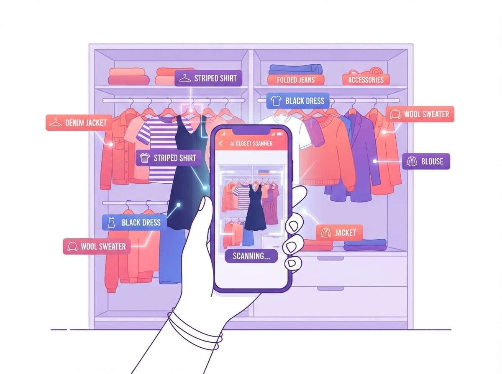

나만의 AI 스타일리스트, AI 패션 코디네이터가 체형·피부톤·라이프스타일까지 분석해 매일 아침 완벽한 코디를 완성해드립니다.
지금, 패션 시장은 개인화와 효율을 동시에 원하고 있습니다.
꾸준한 성장세를 이어가는 안정적인 시장
소비자 대다수가 옷 고르는 데 시간을 낭비한다고 응답
맞춤형 스타일링에 대한 니즈가 빠르게 커지는 중
우리 솔루션으로 중복·충동 구매를 줄일 수 있습니다
옷은 많아도, 매일 아침은 여전히 막막합니다.
옷이 가득해도 "입을 게 없다"는 느낌. 옷장 속 아이템을 어떻게 매치해야 할지 막막한 소비자가 대다수입니다.
내 체형과 피부톤에 맞는 색상과 실루엣을 혼자 파악하기 어렵고, 잘못된 선택이 반복됩니다.
매 시즌 쏟아지는 트렌드를 파악하고 옷장에 적용하기에 현대인의 일상은 너무 바쁩니다.
체형, 피부톤, 라이프스타일까지 — AI가 당신을 완전히 이해합니다.
최신 트렌드와 당신의 데이터를 결합해 매일 아침 단 몇 초 만에 완성
옷장 속 숨겨진 조합 발굴, 정말 필요한 아이템만 추천
언제 어디서든 당신만을 위한 맞춤 스타일 제안
데이터보다 중요한 건 결국 “나에게 맞는 스타일”입니다.
날씨, 일정, 기분까지 반영해 오늘의 코디를 바로 제안합니다.
체형, 피부톤, 취향 데이터를 기반으로 가장 어울리는 조합을 찾습니다.
이미 있는 아이템을 기반으로 조합을 만들어 중복 구매와 낭비를 줄입니다.
취향 피드백을 학습해 매일 더 정교한 스타일을 제안해드립니다.
4단계로 완성되는 나만의 스타일링 루틴
스마트폰 카메라로 AI가 보유 의류를 자동 분석·분류합니다.
피부톤·체형·라이프스타일을 학습해 정확한 맞춤 코디를 제안합니다.
날씨·일정·기분까지 반영해 매일 아침 최적의 조합을 제시합니다.
사용할수록 취향을 더 정교하게 학습해 스타일이 함께 성장합니다.

사진 한 장이면 충분해요. 색상, 카테고리, 소재까지 자동으로 분류되어 AI 코디네이터의 데이터베이스가 됩니다. 더 이상 "이 옷 어디 있더라?" 고민하지 마세요.